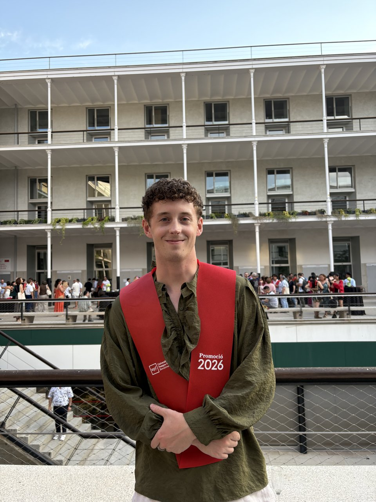

Bioinformatician and data scientist working across computational biology, data engineering, and applied data science: single-cell genomics, clinical-trial data pipelines, and the statistical modeling that turns raw data into a decision someone can act on.
I work at the intersection of statistics, machine learning, and real-world data infrastructure, building the pipelines that turn noisy, high-dimensional data into findings a team can actually use. My background is in biology and mathematics, and my current work spans bioinformatics, data engineering, and applied data science. The throughline is the same rigorous statistical thinking, applied to messy data wherever it lives.
In my free time I can be found playing clarinet in a local catalan orchestra, running the Carretera de les Aigües, or swimming on the Panteres Grogues swim team. I have been slowly setting down roots here in Catalunya, and I'm looking forward to spending my next several years here.
EU work authorization (Irish citizen) ... no visa sponsorship required.

Universitat Pompeu Fabra (UPF), Barcelona. Coursework in statistical & machine learning methods, databases & web development (SQL), algorithms, and computational genomics.
St. Olaf College, Northfield, MN. Presidential Scholarship, Dean's List (2021–2022).
Designed and implemented end-to-end data pipelines in R and Python to process, normalize, and analyze high-dimensional single-cell RNA-seq datasets (tens of thousands of features per sample) from an Alzheimer's disease mouse model. Applied unsupervised clustering, dimensionality reduction (PCA, UMAP), and statistical modeling to identify cell-type-specific gene expression patterns across experimental conditions and biological sexes. Conducted differential expression analysis and pathway enrichment using curated gene sets (MitoCarta), and integrated transcriptomic, gene regulatory network, and behavioral phenotype data into a multi-layered view of treatment response.
Built and validated a data processing pipeline combining sequencing outputs with statistical clonality assessment methods for lymphoma diagnostics from cell-free DNA samples. Designed and executed a systematic benchmarking study comparing multiple analytical pipelines, synthesizing quantitative results into a comparative report to support data-driven platform selection.
Processed and analyzed whole-genome sequencing data using Python-based pipelines to investigate genetic elements associated with a pediatric cancer, managing large-scale genomic data from ingestion through interpretation. Performed statistical analysis and built visualizations in R to communicate findings to a multidisciplinary research team.
Developed a Python-based data extraction pipeline to process large collections of biological sequence files from public databases, enabling downstream phylogenetic analysis. Applied statistical tools and databases to analyze genome-scale datasets and reconstruct evolutionary relationships across species.
Designed an experiment and performed statistical analysis and data visualization in R to study environmental nutrient dynamics; presented findings at a college-wide research symposium.
Supported students in biology and statistics courses with R programming, data wrangling, visualization, and reproducible analysis workflows in RStudio and RMarkdown.
My thesis, conducted in Dr. Arnau Busquets Garcia's lab at IMIM (Cell-Type Mechanisms in Normal and Pathological Behavior Research Group), asked whether a cannabinoid compound could reverse molecular and behavioral signs of Alzheimer's disease in a mouse model, and if so, through which cell types and regulatory mechanisms.
The study combined behavioral testing with single-cell RNA sequencing across the major cell populations of the hippocampus, comparing a well-established transgenic Alzheimer's mouse model against wild-type controls, treated and untreated. I built the computational analysis end to end: quality control and cell-type annotation across roughly 190,000 cells, differential expression and pathway-activity scoring across cell types, and gene regulatory network reconstruction to identify which transcriptional programs were disrupted by disease and responsive to treatment.
The analysis pointed to a specific vascular cell population as an unexpectedly central site of the disease's molecular impact. That's not a cell type traditionally considered a primary driver in Alzheimer's research. It also identified a small set of candidate transcriptional regulators that may explain how the treatment partially reverses that impact.
This is unpublished, ongoing research. The more specific findings, exact recovery figures and the individual transcription factors and genes identified, are kept general here rather than published ahead of the work itself. Happy to discuss the details directly in conversation.
Chosen to cover distinct ground: computational biology, data engineering, and applied data science, each with the full pipeline behind it rather than just a model in a notebook. Every finding below comes from real output, not a planned feature.
A full ETL/ELT pipeline over ~4,200 Alzheimer's disease trials from ClinicalTrials.gov: Python extraction → BigQuery → a tested, documented dbt model (staging → intermediate → marts) → an analytical SQL layer built on window functions and multi-step CTEs.
Key finding: industry-sponsored trials show a clear "Phase 3 valley of death": termination risk climbs from 11.5% at Phase 1 to 35.3% at Phase 3, the field's most expensive and definitive stage. Over the same period, the share of trials that are classic phase-classified drug trials has fallen from about 65% to 30%, a plausible structural response to that failure pattern.
An independently built PySpark pipeline (QC, normalization, HVG selection, PCA, clustering) tested against a published single-cell RNA-seq dataset (Di Bella et al. 2021, Nature) with real ground truth. Does it correctly recover a known rare population, Cajal-Retzius cells, and how does recovery reliability change with sample size?
Key finding: the full ~89,000-cell dataset recovers Cajal-Retzius cells at 93.3% recall and 55.2% precision. A sampling experiment shows recall alone is a misleading signal at smaller scale: at 2,000–10,000 cells, recall stays high (65–78%) while precision collapses to about 1.4%.
A churn model built with methodological rigor as the actual point: leakage-safe preprocessing, a decision threshold locked via cross-validation on training data only, a calibration check, and subgroup error analysis, followed by a retention-targeting simulation with an explicit sensitivity analysis, visualized in Power BI.
Key finding: at base-case assumptions, model-based targeting beats contacting every customer, but only above a break-even retention success rate of about 39%. The real answer isn't "the model works" — it's "the model works under these specific, checkable conditions."
Access to diagnosis using liquid biopsy (ADLiB): identifying lymphoma in a tuberculosis-endemic setting. Co-authored publication.
Computational tools to link cannabinoids to Alzheimer's disease. Presentation.
Quantifying clonotype diversity within T-cell and B-cell acute lymphoblastic leukemia patients. Presentation.
Open to data scientist, data engineer, and bioinformatics roles. The fastest way to reach me is email — the form below opens a pre-filled message in your email client.
Prefer to email directly? Reach me at lmcbride053@gmail.com.